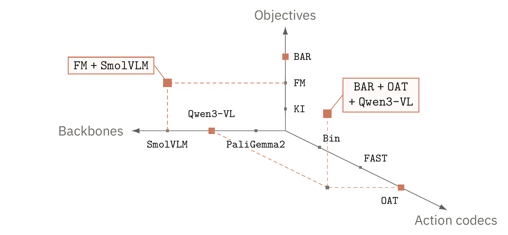
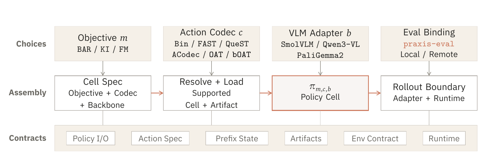
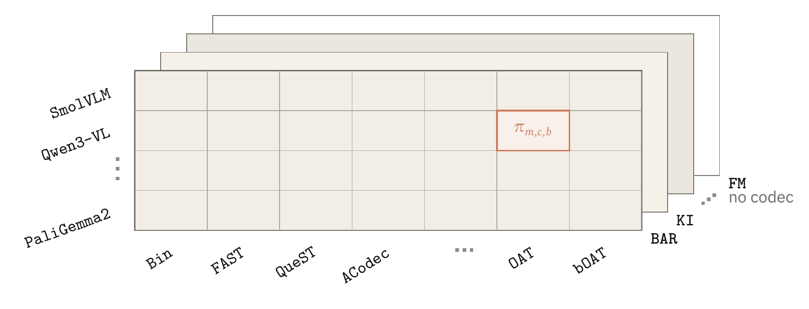
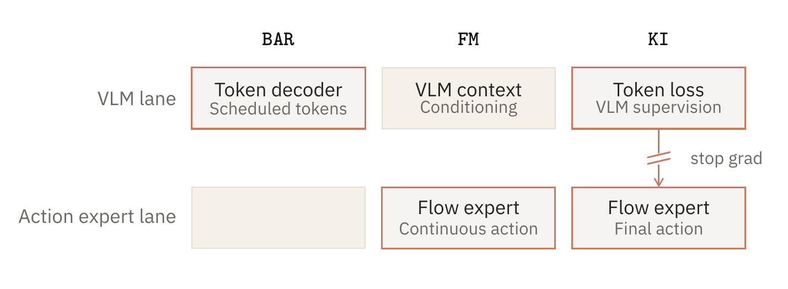
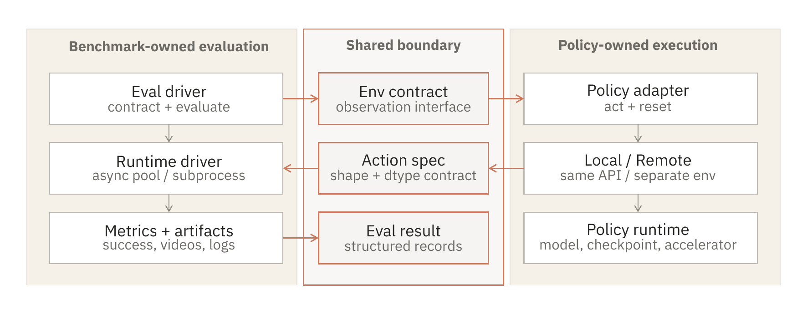

Praxis 用于 VLA Policy 研究的 可控实验平台
Praxis 把 VLA 实验整理成显式声明的 policy cells：先写清 objective、动作表示、backbone 和 evaluator， 再留下可审计的比较记录。
1Stanford University

VLA 研究需要实验平台，而不是又一个私有栈。
一个 rollout 分数常常把 objective、tokenizer、backbone、simulator adapter、normalization state 和 serving path 全部压成一个数字。Praxis 要做的是在训练和评测开始前，把这些选择先写清楚。
- 问题：很多 VLA 比较一次替换太多组件，最后分数差异很难归因。
- 方法：praxis-vla 定义 policy cells，praxis-eval 固定 benchmark drivers 看到的 reset/act 边界。
- 目标：一个新研究可以只添加一个 objective、codec、backbone 或 benchmark，而不必 fork 整个实验平台。
Benchmarks 追踪能力，Praxis 追踪比较本身。
现在的 VLA 系统已经是完整 pipeline。如果一篇文章同时替换 action tokens、VLM family、processor logic、 action normalization 和 rollout glue，最后比较的可能是两个 pipeline，而不是一个清晰的研究想法。
Praxis 把讨论单位从系统名字改成 policy cell。这个 cell 会声明当前使用的 objective、 action representation、VLM backbone 和 evaluator interface。
- Policy cell
- 一个被明确声明的组合：objective、action representation、backbone，以及 evaluator binding。
- Study axis
- 这次研究真正想改变的那条轴，比如 OAT 对 bOAT，或者 BAR 对 KI。
- Evaluation boundary
- 一条窄的 reset/act protocol，用来保证 simulator 语义仍由 benchmark driver 管理。
- Artifact record
- 检查结果时需要的 metrics、configs、action specs、logs 和 runtime metadata。
Praxis = praxis-vla + praxis-eval。
Praxis 不是某一个 repository 的名字。praxis-vla 负责 policy 侧的 matrix， praxis-eval 负责面向 benchmark 的 protocol。两者合起来，才让一个 cell 可以被构建、运行和检查。

注册 objectives、action representations、VLM adapters、policy I/O 和保存下来的 artifacts。
通过共享 reset/act interface，让本地或远程 policies 跑在 benchmark drivers 上。
让周围 protocol 保持可见，这样读者看到的是一项研究，而不是孤零零的分数。
一个 VLA policy 先成为 cell，再成为 claim。
Tokenized policies 占据 objective、action-codec 和 backbone 三条轴。Tokenless flow-matching policies 位于 objective-backbone 平面上。当前 release 是具体的，但这些轴本身刻意保持开放。

BAR 预测 action-token blocks，KI 用 tokens 监督 VLM context，FM 直接预测连续 action chunks。
Bin、FAST、QueST、ACodec、OAT 和 bOAT 展示了不同 rate、distortion 与建模难度之间的 tradeoffs。
SmolVLM、Qwen3-VL 和 PaliGemma2 被视为可替换的 policy inputs，preprocessing 由 adapter 管理。
每个 objective 隔离一种不同的控制假设。
Policy-cell notation 不只是记账。它会在 training、loading、serving 或 rollout 开始前，先声明这次比较打算改变什么。

- BAR
- 按 schedule 分块生成 action tokens，再 detokenize 成可执行控制。
- KI
- 把 action tokens 作为 VLM 监督信号，同时由连续 expert 负责最终动作生成。
- FM
- 移除离散 token 轴，直接预测连续 action chunks。
Evaluation 应该是 protocol，不是藏起来的 glue。
一个 policy 只有放在具体上下文里才有意义：它接收什么 observations，需要满足什么 action convention， 在哪些 tasks 上 rollout，以及由哪个 simulator runtime 执行动作。praxis-eval 把这些责任分开。

- Benchmark-owned semantics. Task selection、simulator stepping、metrics 和 records 留在 driver 内部。
- Policy-owned execution. policy 暴露 reset 和 act 行为，但不接管 evaluator。
- Structured records. 每个 rollout 都可以携带 metrics、artifacts、metadata 和 runtime details，供之后检查。
新的研究应该扩展一条轴，而不是 fork 整个 lab。
Praxis 不是封闭清单。它提供的是一种结构：在尽可能保留共享 interfaces 的前提下，添加新的 objectives、 action representations、backbones 和 benchmarks。
- 添加 objective。声明 supervision signal、inference procedure、rollout-state 需求，以及兼容的 action representations。
- 添加 action representation。声明 token space、decode semantics、prefix behavior、schedules 和 validity assumptions。
- 添加 VLM backbone。把 processor、prompt format、image handling、prefix state、hidden geometry 和 cache behavior 局部化。
- 添加 benchmark。把 simulator semantics 留在 driver 中，同时暴露 policy-facing observations、actions、metrics 和 records。
附录
对使用 Praxis 感兴趣的读者，可以先看 praxis-vla 和 praxis-eval。
@misc{liu2026praxis,
title={Praxis: A Controlled Laboratory for Vision-Language-Action Policy Research},
author={Liu, Chaoqi},
year={2026},
url={https://ordered-action-tokenization.github.io/praxis/praxis.pdf}
}